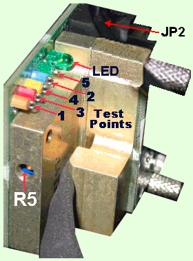
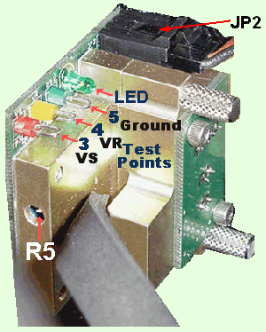

This procedure describes how to adjust the substrate bubble detector.
Perform this procedure when:
there have been substrate bubble detector errors.
the substrate bubble detector PCB has been replaced.
Prepare the instrument.
Confirm that there is no fluid in the substrate probe tubing routed through the bubble detector.
Note: Errors during priming can leave fluid in the probe tubing that causes the bubble detector adjustment to fail.
If you suspect that there is fluid in the probe tubing, drain the tubing.
From the
Diagnostics screen, home the substrate pump.
Connect to the AU using Desktop Sharing.
On the AU Desktop, open SMCTest.exe.
In SMCTest select
Substrate.Motor > Enable > Home to home the device.
Select
Home several times while monitoring slippage to identify home-sensor or motor-motion issues.
To draw the fluid out of the tubing into the pump, type
-1000 steps into the empty box and then select
Enable > Goto.
Confirm the pump piston pulled downward to draw the fluid into the pump.
Close SMCTest.
Note:
In rare cases, it might be necessary to remove the probe tubing from the bubble detector to drain the tubing completely.
Failure of aspirate probe 3 to aspirate substrate during priming can cause the substrate RV to overflow. If the substrate RV overflows, substrate (not air) is drawn into the tubing. No air in the tubing causes a
Bubble Detector: no air->fluid edge found error.
Adjust the sensitivity of the substrate bubble detector.
Figure 190: Bubble detector PCB test points: 1114B

Figure 191: Bubble detector PCB test points: 1114C

Measure the DC voltage on the red reference test point (TP3) on the bubble detector PCB.
Note:
Set the DVOM to DC volts.
Connect the black lead to the green ground test point (TP5)
Use the red DVOM lead to measure the voltages on the red reference test point (TP3).
To determine the target voltage, multiply the reference voltage on the red test point (TP3) by 1.4. Record the target voltage.
Adjust R5 so that the voltage on the yellow adjustable test point (TP4) matches the target voltage.
Note:
The adjustment specification for test point 4 (TP4) is 1.35 to 1.45 times the reference voltage.
Turning the R5 potentiometer adjustment screw clockwise increases the voltage on test point 4 (TP4).
Use a small short screwdriver for the potentiometer adjustment (the green screwdriver from the CARES kit works well).
The normal voltage on test point 4 (TP4), with air in the tubing, is 0.050 V DC to 1.25 V DC.
If the voltage does not adjust, then confirm that the volt meter lead is on the yellow test point (TP4), there is no fluid in the tubing, and the tubing is seated correctly in the tubing channel of the bubble detector.
If the meter leads short the test points together and the output is lost, then disconnect and reconnect the bubble detector PCB power connector JP2 at the top of the bubble detector PCB to reset the fuse. The cover interlock or MCC power switches do not control power to this PCB.
Verify operation of the substrate bubble detector.
Caution: Do not select
Disable Process Monitoring during the verification priming because errors will not be reported.
Select
Diagnostics > Prime Fluidics, and then select the options
Substrate In Use and
Calibrate Drawback.
Select
Start Priming to prime substrate the default number of cycles.
If there are no errors, then the substrate bubble detector is operating correctly.
Note: The green LED on the substrate bubble detector PCB is on when the substrate tubing is empty and off when the substrate tubing contains substrate.